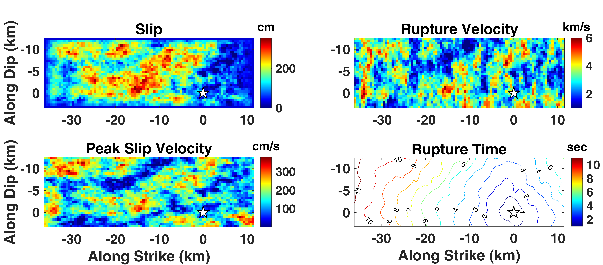
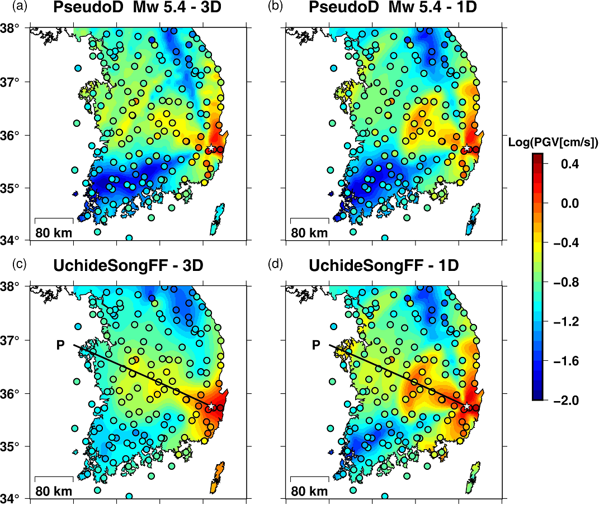
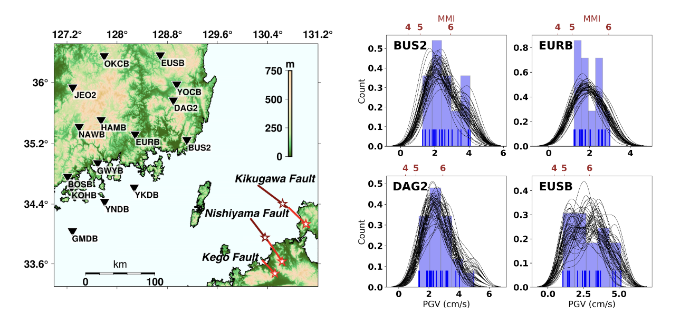
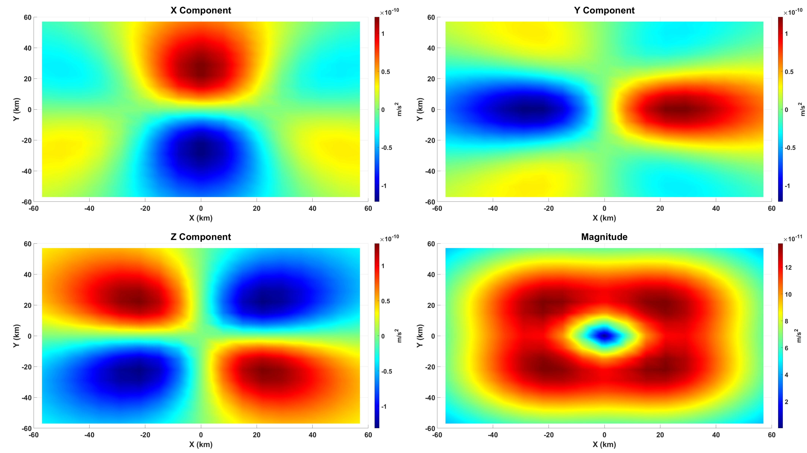

RESEARCH
I perceive seismology as a study of identifying the mapping between the unknown earthquake source domain and the codomain of observables. Although the forward mapping - represented by the Green's functions - is deterministic in theory, some aspects of the map still remain unclear. The earthquake source process is ill-constrained, the available observations are limited, and the mapping functions are restricted by our knowledge about the Earth's structure and the seismic wave propagation. I believe that the relationship between the source domain and the observable range should be formulated probabilistically to account for both epistemic and aleatory uncertainties. In this sense, my research aimed to make a small contribution towards identifying the mapping through numerical modeling and statistical parametrization, albeit within a limited scope of frequency, magnitude, and region.
3-D Seismic Wave Propagation
In my publication Lee et al. (in press), I simulated the seismic waveforms for large (Mw > 5.4) earthquake scenarios in the southeastern Korean Peninsula, using pseudo-dynamic rupture models and a 3-D velocity model within a SEM-based framework (SPECFEM3D). Ensembles of pseudo-dynamic rupture models (Song, 2016), with correlation structures derived from a set of dynamic rupture models, were generated stochastically to emulate the unknown rupture process under physical constraints. 300 different rupture models were generated for a fixed scenario magnitude, and each rupture model was convolved with the pre-calculated Green's functions at the discretized subfaults. Comparison of the aggregated peak ground velocity values to the observations of the 2016 Gyeongju earthquake demonstrated that the effects of surface-wave radiation, rupture directivity, and both local and regional amplifications from the 3-D wave propagation were reproduced accurately.

Figure: Gradient plots illustrating an example of a randomly generated pseudo-dynamic rupture model for a Mw 7.0 scenario (Lee et al., 2021).
This reseach was developed with guidance from Professor Seongryong Kim, and is the first published work of 3-D physics-based ground motion simulations targeting the Korean Peninsula. In the research process, I learned that the faith in numerical simulations can only be developed through rigorous verification and validation. I had previously tested the reliability of 3-D wave propagation simulations with finite fault models (SRCMOD) of large historical earthquakes (e.g., 1946 Nankai, 2004 Fukuoka, 2016 Kumamoto) in my undergraduate research project (1, 2), which became the foundation for this study. I seek to develop my abilities as a researcher to appropriately formulate meaningful geophysical problems and interpret the implications of numerical simulations. For more details, please check out my presentation in AGU 2021.

Figure: The spatial distribution of median PGV from the ground motion simulations of (a) Mw 5.4 pseudo-dynamic models in 3-D, (b) Mw 5.4 pseudo-dynamic models in 1-D, (c) USFF model in 3-D, and (d) USFF model in 1-D. The observed PGV values from the 2016 Gyeongju earthquake are plotted in circles (Lee et al., 2021).
References
- Lee, J., Song, J.-H., Kim, S., Rhie, J., & Song, S. G. (2021). Three-dimensional seismic wave propagation simulations in the southern Korean Peninsula using pseudo-dynamic rupture models. Bull. Seismol. Soc. Am., 112(2), 939-960
- Komatitsch, D., Liu, Q., Tromp, J., Suss, P., Stidham, C., & Shaw, J. H. (2004). Simulations of ground motion in the Los Angeles basin based upon the spectral-element method. Bull. Seismol. Soc. Am., 94(1), 187-206.
- Rhie, J., Kim, S., Woo, J. U., & Song, J.-H. (2016, December 12-16). Three-dimensional velocity model of crustal structure in the southern Korean Peninsula and its full-waveform validations [Poster presentation]. American Geophysical Union Fall Meeting, San Francisco, CA.
- Song, S. G. (2016). Developing a generalized pseudo-dynamic source model of Mw 6.5-7.0 to simulate strong ground motions. Geophys. J. Int., 204(2), 1254-1265.
- Uchide, T. & Song, S. G. (2018). Fault rupture model of the 2016 Gyeongju, South Korea, earthquake and its implication for the underground fault system. Geophys. Res. Lett., 45(5), 2257-2264.
Towards a Probabilistic Seismic Hazard Assesment
As a completion of my Master's thesis, I am aiming to extend the results of physics-based ground motion simulations to probabilistic seismic hazard analysis and provide estimates of possible structural damage. I am targeting large potential earthquakes in Northern Kyushu, which are in proximity to the Korean Peninsula and have high probabilities of rupture. Statistical estimations based on ground motion simulations of sampled pseudo-dynamic rupture models, may provide a rough probability distribution of possible peak ground motions at a site. Applications involving fragility curves of earthquake engineering will give probabilistic predictions on the degree of structural damage being slight, moderate, or extensive.

Figure: Large active faults at Northern Kyushu that are in proximity to the Korean Peninsula. Fault segments with high probability of rupture are selected.
I had been working on this research since my poster presentation in AGU 2019. My other research project on the 2016 Gyeongju earthquake, which began later in 2020, happened to be published in advance in the process of validating the simulation framework. My Master's thesis under preparation will be a combination of the two papers, and will discuss from implementation of the simulation method, comparisons of the results to the observations, and the application prospects to earthquke engineering in its entireity.
References
- Lee, J., Song, J.-H., Rhie, J., & Song, S. G. (in preparation). Physics-based estimation of ground shaking in the southeastern Korean Peninsula for seismic hazards in northern Kyushu
Modeling Prompt Elastogravity Signals
For my undergraduate thesis in Physics, I studied the numerical modeling of gravity perturbations induced by earthquake rupture. This research topic was prompted by a coffee talk with my friend Taehun Kim, who studies gravitational physics. We were having a conversation about interdisciplinary projects, when he told me that the sensitivity of gravitational wave detectors were limited at low frequencies due to seismic noise. I sensed a potential research topic and visited Professor Sunghoon Jung to discuss some ideas I had, which developed into this thesis paper (in Korean).

Figure: The three-component induced gravity acceleration vector at the Earth's surface, 5 seconds after a hypothetical Mw 6.5 strike-slip earthquake at depth 50 km (Lee, 2020).
Using the codes (by Surendra Somala) implemented in the SPECFEM3D software, I calculated the transient variation of gravity acceleration during and after the earthquake rupture, which is caused by the volumetric deformation carried by P waves. I succesfully reproduced the results of Harms et al. (2015), which compared the numerical simulations of gravity perturbation in a homogeneous, elastic half-space with approximate analytic solutions. Although the application prospects of prompt gravity signals to early earthquake warning can be controversial, I find it meaningful that I have proactively searched and identified a unique interdisciplinary problem.
References
- Harms, J., Ampuero, J. P., Barsuglia, M., Chassande-Mottin, E., Montagner, J. P., Somala, S. N., & Whiting, B.F. (2015). Transient gravity perturbations induced by earthquake rupture. Geophys. J. Int., 201(3), 1416-1425.
- Juhel, K., Ampuero, J. P., Barsuglia, M., Bernard, P., Chassande-Mottin, E., Fiorucci, D., Harms, J., Montagner, J.-P., Vallée, M., & Whiting, B. F. (2018). Earthquake early warning using future generation gravity strainmeters. J. Geophys. Res. Solid Earth, 123, 10,889-10,902.
- Lee, J. (2020). Numerical modeling of gravity perturbations induced by earthquake rupture [Bachelor's thesis in Physics]. Seoul National University
- Vallée, M., Ampuero, J. P., Juhel, K., Bernard, P., Montagner, J.-P., & Barsuglia, M. (2017). Observations and modeling of the elastogravity signals preceding direct seismic waves. Science, 358(6367), 1164-1168.